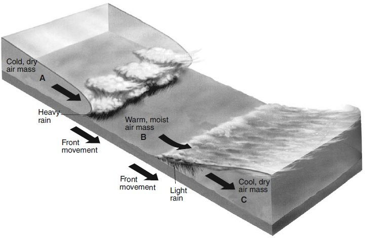

| Word | Definition |
|---|---|
| Climate | the average weather condition in an area over a long period of time (long term). |
| Arid | dry. |
| Humid | wet. |
| Urban Heat Island Effect | Urban area is hotter than rural area because urban area has more concrete than rural area. Rural area has more plants (containing water) which keep the temperature in the countryside more moderate |
| Cloud | a huge body of water droplets which are condensed onto dust in the air. |
| Wind | movement of air. Name of wind indicates the direction from which it comes from. |
| Sea Breeze | wind that comes from the sea. |
| Land Breeze | wind that comes from the land. |
| Monsoon | seasonal wind direction. |
| Tropical | usually warm. |
| Temperate | season of warm and season of cold. |
| Polar | usually cold. |
The diagram below shows air masses, clouds, and
rain associated with two fronts that are influencing weather conditions in New York State. Letters A, B, and C
represent three air masses. The arrows show the direction of air and front movements.

Identify the most likely geographic source region for air mass B.